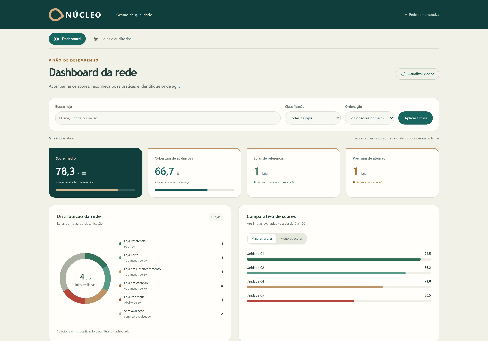
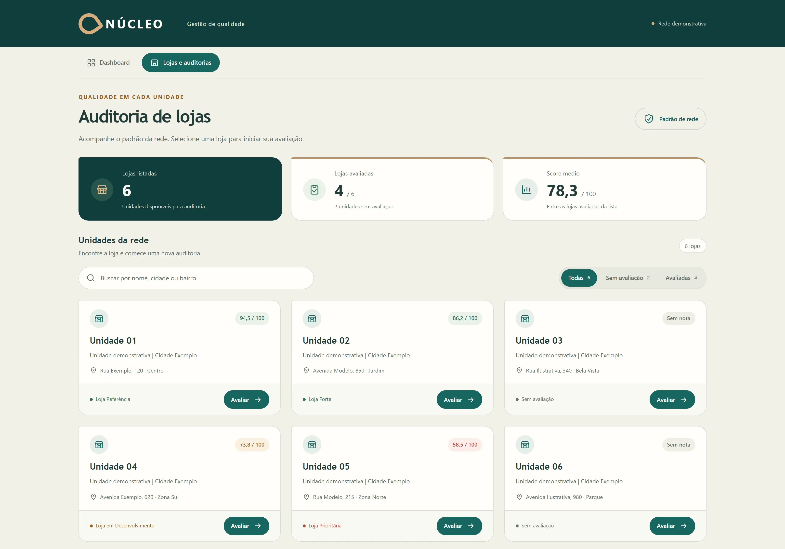
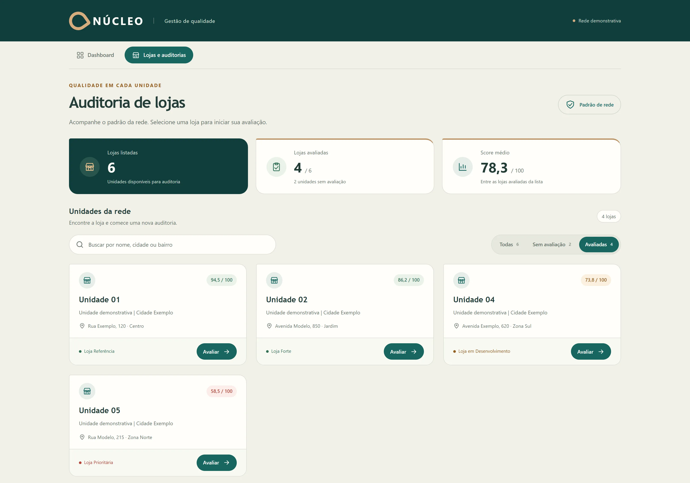
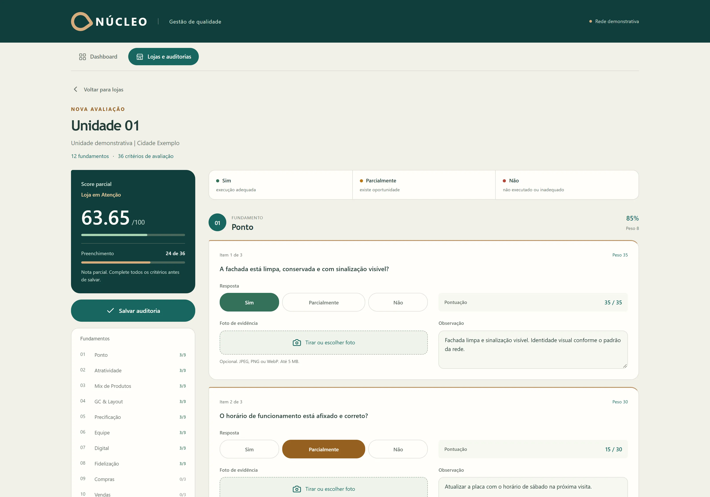
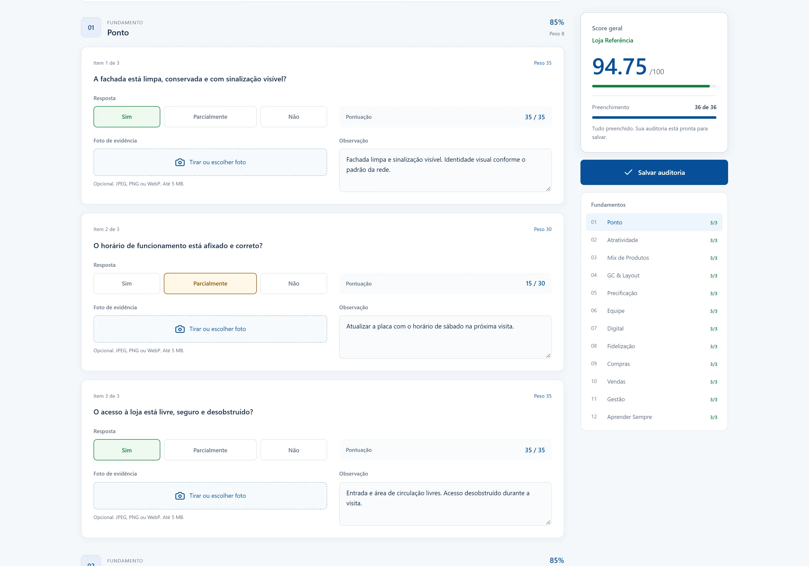
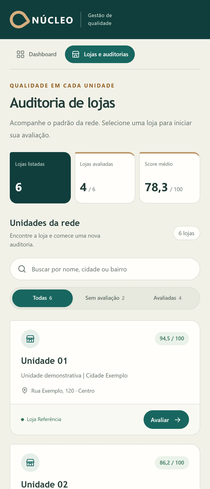
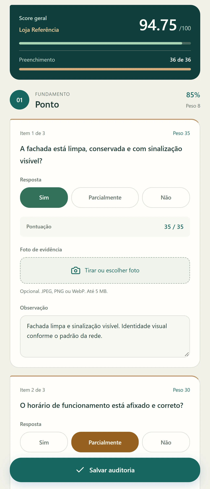

Avaliação estruturada
Percorra 36 critérios distribuídos em 12 fundamentos operacionais para avaliar cada loja com uma referência comum.
Auditoria para redes de farmácias
Padrões claros. Evolução visível.
Uma avaliação consistente começa com critérios bem definidos. O Score organiza a auditoria de cada loja, reúne evidências e transforma respostas em uma pontuação para acompanhar a rede.

Recursos
Um fluxo de avaliação para padronizar a auditoria e acompanhar os resultados de cada unidade, no computador ou durante a visita.
Percorra 36 critérios distribuídos em 12 fundamentos operacionais para avaliar cada loja com uma referência comum.
Respostas positivas, parciais e negativas compõem um score ponderado de 0 a 100, calculado durante a avaliação.
Acompanhe o preenchimento e a pontuação ao longo da auditoria, com os critérios organizados por fundamento.
Complemente as respostas com observações e fotos quando um critério puder ser comprovado visualmente.
Localize unidades com busca e filtros. Consulte notas e status para identificar lojas avaliadas e avaliações pendentes.
Use a interface responsiva para avaliar durante a visita, responder aos critérios e adicionar fotos pelo celular.
Por dentro da aplicação
Veja como os indicadores, os critérios e as evidências se encontram no fluxo de avaliação.
Telas demonstrativas com dados fictícios.

Indicadores, score médio e classificação das unidades em uma única tela.

Filtro das lojas avaliadas, com notas e faixas de classificação.

12 fundamentos, 36 critérios e acompanhamento do preenchimento em tempo real.

Respostas, observações e campo para evidências fotográficas em uma avaliação preenchida.
Indicadores, classificações e comparativo das pontuações das unidades.

Painel responsivo com indicadores, busca e filtros no celular.

Respostas por toque, observações e campo para tirar ou escolher uma foto.
Conheça também
Explore a aplicação que reúne indicadores comerciais, gestão de associados, expansão e análises com inteligência artificial.
Conhecer o FAT